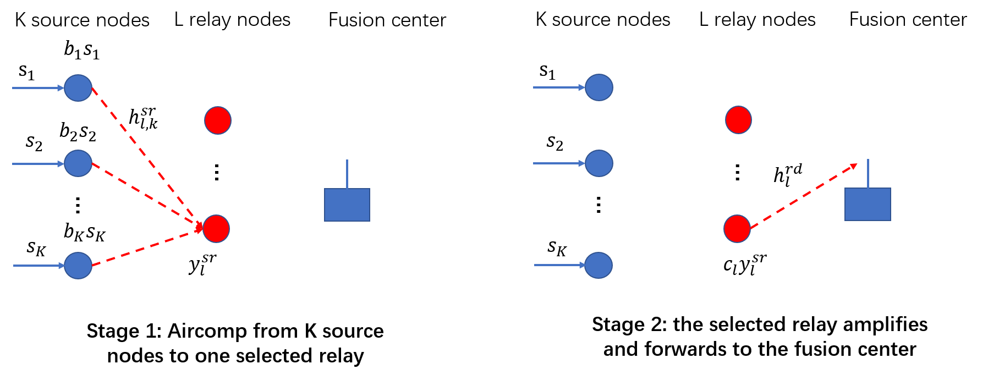

|
Research
Current
Achieving Cooperative Diversity in Over-the-Air Computation by Relay Selection

Machine learning applications at wireless edge involve collecting
massive data from edge devices, which can be very costly.
To tackle this challenge,
over-the-air computation (AirComp) is a promising solution where many devices transmit
their message simultaneously to achieve ultra-fast aggregation. However, channel fading
can severely impair its performance.
In this project, we incorporate cooperative diversity techniques into AirComp.
We first investigate the power control problems and outage performances where there are
no relays but the fusion center have single or multiple antennas. We propose an antenna
selection scheme that selects the best antenna for reception. We characterize its outage
performance and prove the diversity order is equal to the number of receive antennas.
Motivated by this result above, we develop a relay selection scheme in relay-aided AirComp
where the “best” relay is chosen to amplify and forward to the fusion center. We demonstrate
that this relay selection scheme can also achieve full diversity order and
enjoy an outage performance
comparable to AirComp with multiple antennas.
Main references:
J. N. Laneman, D. N. Tse, and G. W. Wornell,
“Cooperative diversity in wireless networks: Efficient protocols and outage behavior,”
IEEE Transactions on Information theory, vol. 50, no. 12, pp. 3062-3080, 2004.
Y. Zhao, R. Adve, and T. J. Lim,
“Improving amplify-and-forward relay networks: Optimal power allocation
versus selection,”
in 2006 IEEE International Symposium on Information Theory, pp. 1234–1238.
X. Cao, G. Zhu, J. Xu, and K. Huang,
“Optimal Power Control for Over-the-Air Computation in Fading Channels,”
arXiv e-prints. Online.
Reliable Communication in mmWave Vehicular Network Using Deep Learning
The mmWave wireless systems face two main challenges:
first, mmWave signals are highly sensitive to blockages, which affects the system reliability especially in
a dynamic environment;
Second, the narrow beam and large antenna arrays can introduce critical beam training overhead.
In prior work, a solution based on recurrent neural network is proposed to predict blockage/handoff from previous beam
sequences. Also, some authors address the beam selection problem by using machine learning tools with situational
awareness.
In this project, we extend prior work by combining the channel information and situational awareness
efficiently, and investigate reliable communication with the presence of dynamic blockages. Currently, we have configured Wireless Insite, a ray-tracing simulator, together with SUMO, a traffic simulator,
to generate training and testing dataset.
Main References:
A. Klautau, P. Batista, N. González-Prelcic, Y. Wang and R. W. Heath,
“5G MIMO Data for Machine Learning: Application to Beam-Selection Using Deep Learning,”
2018 Information Theory and Applications Workshop (ITA), San Diego, CA, 2018, pp. 1-9.
A. Alkhateeb, I. Beltagy and S. Alex,
“Machine Learning for Reliable mmWave Systems: Blockage Prediction and Proactive Handoff,”
2018 IEEE Global Conference on Signal and Information Processing (GlobalSIP), Anaheim, CA, USA, 2018, pp. 1055-1059.
Y. Wang, A. Klautau, M. Ribero, A. C. K. Soong and R. W. Heath,
“MmWave Vehicular Beam Selection With Situational Awareness Using Machine Learning,”
in IEEE Access, vol. 7, pp. 87479-87493, 2019.
Past
Error Rate of Spectral Algorithms in the Stochastic Block Model
The stochastic block model is a canonical random graph model for studying clustering and community detection
algorithms. Spectral algorithms and its variants are simple and proved to achieve exact recovery threshold
in the logarithmic degree regime.
We pursued a uniform bound on the error rate of spectral algorithms in general settings, especially between
the weak and exact recovery regimes.
Main References:
E. Abbe, J. Fan, K. Wang, and Y. Zhong,
“Entrywise Eigenvector Analysis of Random Matrices with Low Expected Rank,”
arXiv e-prints. Online.
Soft Decoding of BCH Codes
BCH codes form a powerful class of error-correcting codes that have been widely
used in communication and data storage systems. Traditionally, they are effectively decoded with
hard-decision decoding algorithms like Berlekamp-Massey algorithm. However,
these hard-decision decoders fail to exploit soft information available, limiting their error performance.
We explored a recently proposed coding scheme that performs iterative soft decoding of binary BCH codes,
where a collection of codewords are transformed into a non-binary LDPC codeword.
We reproduced the simulation results, and tried to give
some interpretations from the perspective of minimum distance.
Main References:
S. Lin, K. Abdel-Ghaffar, J. Li and K. Liu,
“A Novel Coding Scheme for Encoding and Iterative Soft-Decision Decoding of Binary BCH Codes of Prime Lengths,”
2018 Information Theory and Applications Workshop (ITA), San Diego, CA, 2018, pp. 1-10.
|